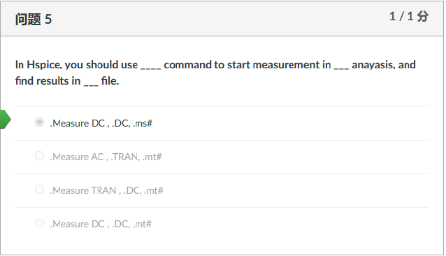
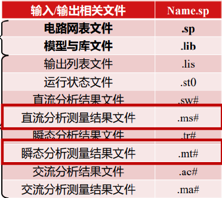

Question Source
考试相关/DIC Review/Chap3 反相器/hw3_answer_2023_update.pdf · PDF page 3 · MCQ 5
Original question numbers are retained. Lab exercises are presented as written or figure-reading questions. Similar questions from different sources retain their own parameters and conditions.
Concepts You Need
is a family of circuit simulators that use device models. HSPICE is one implementation. A netlist is a text description of components, nodes, and analysis commands. The first character of a device name identifies its type: for a transistor, for a bipolar transistor, for a resistor, for a capacitor, and for an independent voltage source. Use.dc for a DC sweep,.tran for transient analysis, and.ac for small-signal AC analysis. The.measure command extracts a result from the specified analysis. Typical measurement output extensions are.mt0 for transient,.ms0 for DC, and.ma0 for AC. Extensions can vary with the version and run settings.
Course reference. PPT/chapter2-device01-MOS-DC chara_20260915.pdf · PDF pp. 39
Related course notes (Chinese). Section 5.5 · Section 5.8 · Section 2.5
Original English question
In Hspice, you should use ____ command to start measurement in ___ analysis, and find results in ___ file.
Show Answer and Explanation
A. Use .MEASURE DC with a .DC analysis. .ms# is the DC measurement output family, while .mt# is for transient measurements.
Calculation details
Supporting tables and figures

